1 Objetivos de la práctica
En esta práctica vamos a trabajar con un visualizador 3D ya construido en Java. El objetivo principal no es aprender desde cero algoritmos avanzados de renderizado, sino abrir el proyecto, probarlo e identificar los distintos elementos que lo componen.
La parte teórica sirve únicamente para orientarte y conocer qué parámetros influyen en el comportamiento del visualizador. No hace falta comprender todas las fórmulas para seguir la práctica ni para consultar el proyecto. No intentes entender todo el código de golpe: sigue el recorrido en orden, ejecuta primero el visualizador y usa las actividades marcadas como Experimenta para ir relacionando lo que ves en pantalla con el código.
Al finalizar, deberías ser capaz de:
- Importar y ejecutar en Eclipse un proyecto Java organizado en paquetes.
- Identificar en el código las clases principales del visualizador y relacionarlas con lo que aparece en pantalla.
- Experimentar con el visualizador y observar cómo cambian el resultado la cámara, la luz y el material.
- Entender, a nivel conceptual, que Phong es una aproximación rápida y que en herramientas profesionales como Blender suelen emplearse modelos de iluminación más completos.
Es conveniente que resolváis todos los ejercicios que se os plantean en el guion, pero no es necesario que los entreguéis. La evaluación se realizará a través de un cuestionario disponible en Moodle.
A modo de esquema, la siguiente figura representa el flujó básico del visualizador:
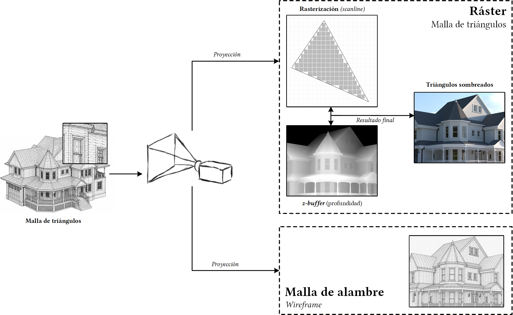
2 El visualizador
2.1 Importando el visualizador
El visualizador de la práctica se puede descargar desde ⤓ aquí. Copia esa carpeta a tu workspace de Eclipse. Si quieres, puedes renombrarla como PracticaVisualizador para que coincida con el nombre usado en este guion.
Cuando abras un modelo .obj por primera vez, el visualizador puede crear junto a él un archivo .obj.vbin. Es una caché binaria para que las siguientes cargas sean más rápidas; si borras la caché, el visualizador la genera de nuevo.
El enlace de descarga también se encuentra disponible en Moodle, en la carpeta de la práctica 9.
Para importar el proyecto:
- Ve a File → Import.
- Selecciona General → Existing projects into workspace (ver Figura 1).
- Elige la carpeta
visualizador(oPracticaVisualizador, si la has renombrado).
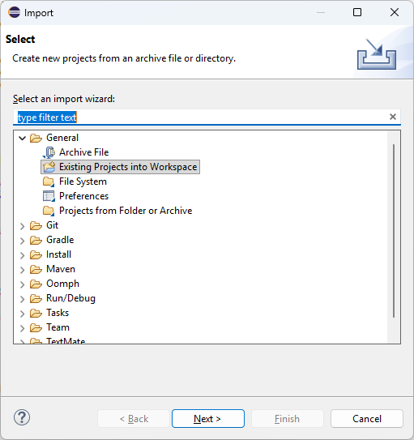
2.2 El código fuente: organización por paquetes
El visualizador es una aplicación suficientemente grande como para que resulte necesario agrupar las clases en paquetes. Un paquete es un conjunto de clases que representan conceptos relacionados entre sí.
El código fuente está dividido en cinco paquetes:
app: arranque del programa y archivoConfiguracion, pensado para cambios sencillos.geometria: clases que representan elementos geométricos como puntos, vectores, normales, caras, objetos y matrices de transformación.escena: clases que representan los elementos de la escena, como colores, materiales, luces y la cámara.interfaz: clases que representan el interfaz gráfico, incluyendo la ventana principal y los paneles de visualización y configuración.renderer: rasterizado, sombreado y efectos visuales. No hace falta entrar aquí al principio.
Puedes ver estos paquetes en el explorador de paquetes de Eclipse, en la parte izquierda de la pantalla (Figura 2). En el sistema de archivos, cada paquete se corresponde con una carpeta dentro de la carpeta del proyecto.
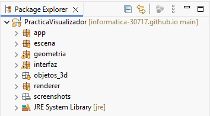
También puedes crear un paquete nuevo para organizar tu código, pero ten cuidado con los cambios que eso puede suponer en el resto del proyecto. En Java, cada clase tiene un nombre completo que incluye el paquete al que pertenece. Por ejemplo, la clase Luz del paquete escena se llama escena.Luz. Si la mueves a otro paquete, su nombre completo cambiará y habrá que actualizar todas las referencias a esa clase en el código.
Para crear un nuevo proyecto puedes hacer click derecho sobre el proyecto en el explorador de paquetes, seleccionar New → Package, darle un nombre y pulsar Finish (Figura 3).
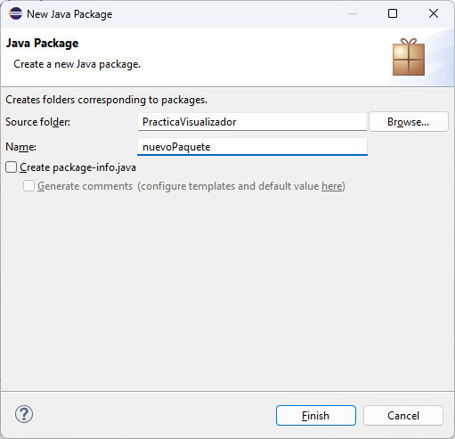
Para mover una clase a otro paquete, arrástrala y suéltala en el nuevo paquete. Antes de confirmar, asegúrate de que está marcada la opción Update references to <clase>.java para que Eclipse actualice automáticamente todas las referencias a esa clase en el código. Antes de confirmar, puedes pulsar Preview para ver qué cambios se realizarían en todo el código del proyecto, como se muestra en la Figura 4.
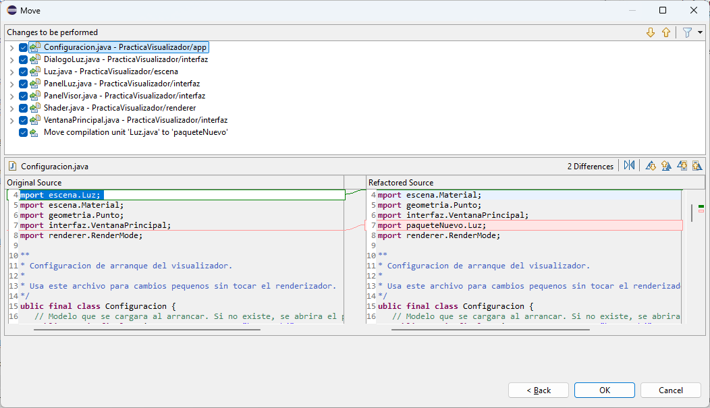
Crea un paquete nuevo: haz clic derecho sobre el proyecto y ve a New → Package. Ponle el nombre que quieras y pulsa Finish.
Después, arrastra y suelta Luz.java del paquete escena al nuevo paquete. Antes de confirmar, asegúrate de que está marcada la opción Update references to Luz.java y pulsa Preview para ver qué cambios se realizarían en todo el código del proyecto. Una vez revisados, vuelve a dejar Luz.java en escena y borra el paquete que has creado (botón derecho → Delete).
¿Por qué esos cambios de código? Cuando desde un archivo quieres acceder a una clase de otro paquete, tienes dos opciones: o escribir <paquete>.<clase>, o bien poner al principio import <paquete>.<clase> y usar simplemente <clase>.
2.3 El código fuente: programación orientada a objetos
La regla habitual de la programación orientada a objetos es que cada archivo contiene una clase, y cada clase representa un concepto concreto.
En el paquete geometria hay tres clases geométricas básicas:
Punto: punto en el espacio (vector de 3 componentes).Direccion: dirección en el espacio (vector de 3 componentes).Normal: normal en el espacio, dirección de longitud 1.
Un Objeto es una serie de caras y vértices. Un vértice es un punto junto con su normal, y una Cara es una lista de vértices con aristas entre puntos consecutivos (y entre el último y el primero).
- Abre en Eclipse los archivos de las clases
Punto,DireccionyNormal. Repasa el código de cada una y observa cómo se relaciona con el Outline que aparece a la derecha, que muestra esquemáticamente los atributos y métodos de la clase.
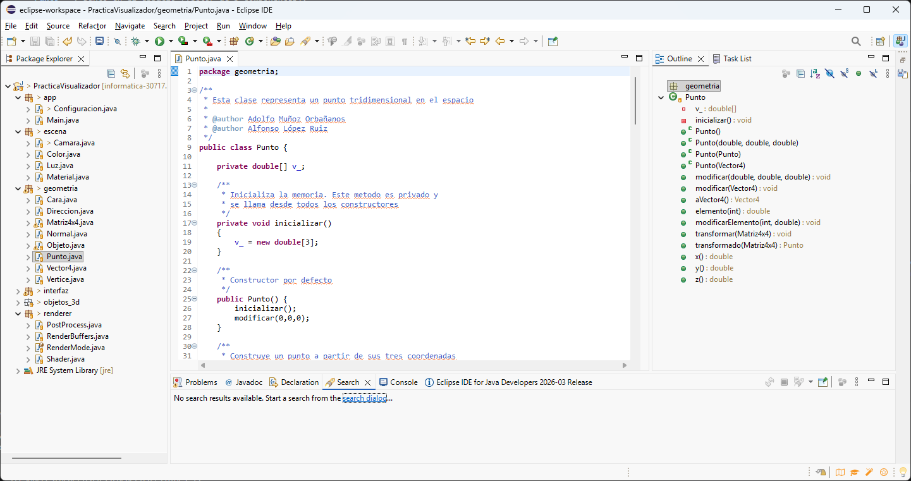
Punto.
- ¿En qué clase está el método
public static void main(String[] args)? Sólo puede haber uno por aplicación; búscalo (pista: está en el paqueteapp).
2.4 Ejecutando el visualizador
Ejecuta el visualizador desde Eclipse usando app.Main (Run As → Java Application). Al arrancar, el programa cargará el modelo configurado en app.Configuracion. Para cargar otro objeto tridimensional, ve a Archivo → Abrir modelo y selecciona un archivo .obj de la carpeta objetos_3d del proyecto. Te recomendamos empezar con house.obj o trex.obj. La carga puede tardar unos segundos.
Puedes cambiar el modo de visualización entre Malla de alambre (wireframe), donde sólo se muestran las aristas, y Raster, que rellena las caras con iluminación.
- Prueba a cambiar los diferentes parámetros de la cámara o a activar el backface culling. ¿Qué ocurre?
- En modo Raster, cambia las propiedades del material (Escena → Material). Intenta conseguir que el objeto sea de color amarillo.
- Juega también con las propiedades de la luz (Escena → Luz).
2.5 Primeros cambios de código
Si vas a tocar código por primera vez, empieza por app.Configuracion. Ese archivo concentra los cambios sencillos del proyecto: modelo inicial, modo de visualización, orientación inicial de la cámara, material y luz.
Abre app.Configuracion y prueba cambios pequeños, sin salirte de ese archivo:
- cambia
MODELO_INICIALpor otro.obj; - prueba otro
MODO_INICIAL; - modifica el color del material o de la luz;
- cambia el campo de visión, la inclinación o la rotación inicial de la cámara.
Ten en cuenta que el visualizador calcula automáticamente una distancia base al cargar o recentrar un modelo, pero no compensa el campo de visión configurado. Así, al cambiar CAMARA_FOV deberías notar de verdad cómo se abre o se cierra la vista.
Ejecuta de nuevo el programa.
2.6 Depuración de errores
En aplicaciones de este tamaño, el depurador de Eclipse resulta muy útil para entender paso a paso qué hace el código. Vamos a depurar el método matrizDeProyeccion() de la clase PanelVisor del paquete interfaz.
No hace falta leer toda la clase antes: usa el buscador de Eclipse y salta directamente a ese método.
Busca en
PanelVisorla línea:geometria.Matriz4x4 proyeccion = new geometria.Matriz4x4();Pon un punto de ruptura (breakpoint): botón derecho sobre la línea → Toggle Breakpoint.
Ejecuta la aplicación en modo depuración.
Pulsa
F6unas pocas veces para avanzar paso a paso y observa cómo se va construyendo la matriz de proyección.Pulsa
F8para continuar la ejecución normal del programa.¿Por qué el programa vuelve una y otra vez a esa misma línea aunque no hayas hecho nada?
Cuando termines, desactiva el breakpoint: botón derecho → Disable Breakpoint.
3 El visualizador por dentro
En esta parte no hace falta memorizar matrices ni seguir todas las fórmulas al detalle. Quédate con esta idea: el programa coloca el objeto respecto a la cámara, proyecta los puntos sobre la pantalla, decide qué partes se ven y les asigna un color.
Con esa intuición ya puedes entender lo esencial del visualizador y trabajar con el proyecto sin perderte en la matemática.
3.1 Proyectando 3 dimensiones en 2 dimensiones
Piensa en este paso como una traducción: del modelo 3D a la imagen 2D que termina apareciendo en pantalla. El programa toma cada punto del objeto, lo sitúa respecto a la cámara y calcula dónde debe dibujarse.
En el código esa traducción se implementa con matrices de cuatro dimensiones (clase Matriz4x4). No hace falta memorizar la técnica: basta con saber que permite encadenar traslaciones, giros y perspectiva de una forma uniforme. Para ello, a cada punto se le añade una cuarta componente llamada coordenada homogénea:
\[ (x,\, y,\, z) \;\longrightarrow\; (x,\, y,\, z,\, 1) \]
La clase Vector4 representa ese vector de 4 dimensiones. La transformación de un vector respecto a una matriz es un producto:
\[ V_t = M \cdot V \]
donde \(V_t\) es el vector transformado, \(M\) la matriz y \(V\) el vector original. Para recuperar el punto 3D se divide por la coordenada homogénea \(w\):
\[ (x,\, y,\, z,\, w) \;\longrightarrow\; \left(\frac{x}{w},\;\frac{y}{w},\;\frac{z}{w}\right) \]
Si \(w = 0\), ese Vector4 no representa un punto que puedas recuperar con la división anterior, sino una dirección. Por eso una traslación no le afecta. Por ejemplo:
\[ \begin{pmatrix} 1 & 0 & 0 & 10\\ 0 & 1 & 0 & 0\\ 0 & 0 & 1 & 0\\ 0 & 0 & 0 & 1 \end{pmatrix} \cdot \begin{pmatrix}4\\3\\2\\1\end{pmatrix} = \begin{pmatrix}14\\3\\2\\1\end{pmatrix} \qquad \begin{pmatrix} 1 & 0 & 0 & 10\\ 0 & 1 & 0 & 0\\ 0 & 0 & 1 & 0\\ 0 & 0 & 0 & 1 \end{pmatrix} \cdot \begin{pmatrix}4\\3\\2\\0\end{pmatrix} = \begin{pmatrix}4\\3\\2\\0\end{pmatrix} \]
En el primer caso se ha movido el punto diez unidades en \(x\). En el segundo, la misma operación no cambia el vector: con \(w = 0\) la parte de traslación queda multiplicada por cero. Si lo que querías era mover una posición, entonces ese vector debía tener \(w = 1\).
¿Qué dos métodos de la clase Punto encapsulan respectivamente la conversión \((x,y,z) \to (x,y,z,1)\) y la vuelta \((x,y,z,w) \to (x/w,\,y/w,\,z/w)\)? Estudia su código.
3.2 Matrices de transformación
Las operaciones importantes aquí son muy intuitivas: trasladar un objeto, cambiar su tamaño y girarlo. La clase Matriz4x4 tiene un método para cada una. No hace falta memorizar las matrices; úsalas como una forma compacta de expresar esas transformaciones:
\[ \text{traslacion}(x,y,z) \;\to\; \begin{pmatrix} 1 & 0 & 0 & x \\ 0 & 1 & 0 & y \\ 0 & 0 & 1 & z \\ 0 & 0 & 0 & 1 \end{pmatrix} \qquad \text{escalado}(x,y,z) \;\to\; \begin{pmatrix} x & 0 & 0 & 0 \\ 0 & y & 0 & 0 \\ 0 & 0 & z & 0 \\ 0 & 0 & 0 & 1 \end{pmatrix} \]
\[ \text{rotacionX}(a) \;\to\; \begin{pmatrix} 1 & 0 & 0 & 0 \\ 0 & \cos a & \sin a & 0 \\ 0 & {-\sin a} & \cos a & 0 \\ 0 & 0 & 0 & 1 \end{pmatrix} \qquad \text{rotacionY}(a) \;\to\; \begin{pmatrix} \cos a & 0 & {-\sin a} & 0 \\ 0 & 1 & 0 & 0 \\ \sin a & 0 & \cos a & 0 \\ 0 & 0 & 0 & 1 \end{pmatrix} \]
\[ \text{rotacionZ}(a) \;\to\; \begin{pmatrix} \cos a & \sin a & 0 & 0 \\ {-\sin a} & \cos a & 0 & 0 \\ 0 & 0 & 1 & 0 \\ 0 & 0 & 0 & 1 \end{pmatrix} \]
La siguiente visualización muestra cómo actúa rotacionZ sobre un punto en 3D. Mueve el ángulo y observa cómo se actualizan los valores de la matriz:
rotacionZ(a)| x | y | |
| x′ | ||
| y′ |
(0.72, 0.24, 0.38)
3.3 La proyección en perspectiva
Aquí aparece un efecto que ya conoces de la fotografía: los objetos lejanos se ven más pequeños, y cambiar la focal cambia cuánto abarca la cámara.
En el visor sucede lo mismo. Primero se coloca el objeto con respecto a la cámara, después se aplica la perspectiva y al final se convierten las coordenadas a píxeles de la pantalla. Si solo quieres quedarte con una idea, quédate con que una distancia focal mayor cierra la vista, mientras que una distancia focal menor la abre.
Sensor 36 × 24 mm con distancia al objeto fija.
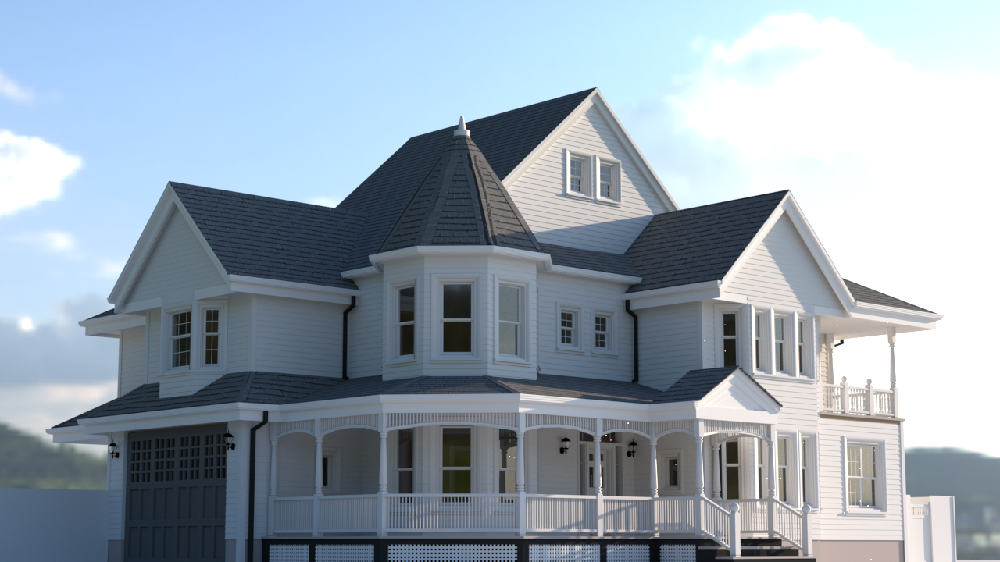
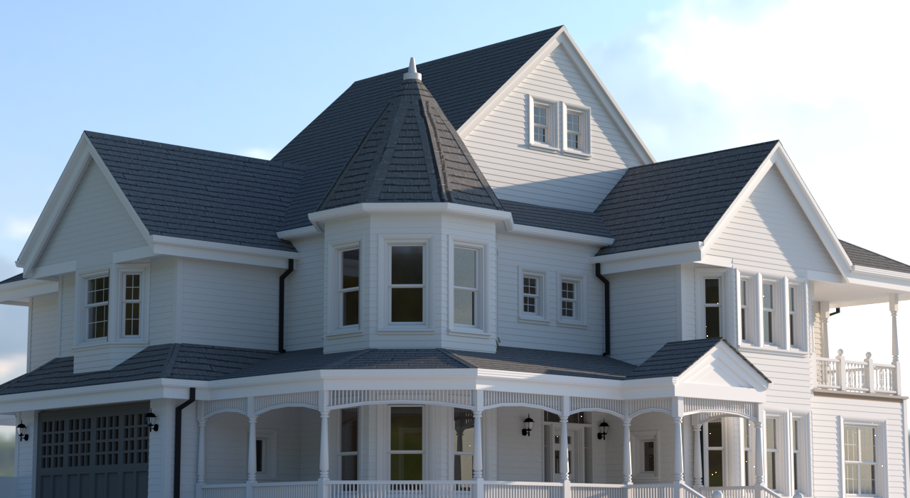
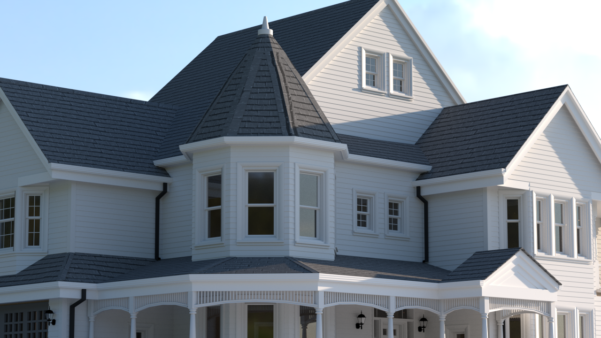
A mayor distancia focal, menor campo de visión y mayor imagen proyectada sobre el sensor.
Una manera muy simple de resumirlo es esta:
\[ x' = \frac{f\,x}{z}; y' = \frac{f\,y}{z} \]
Cuanto mayor es \(z\) (más lejos está el punto), menor aparece en pantalla. El resto de fórmulas del programa refinan esa misma idea para trabajar con una cámara completa, su campo de visión y el tamaño de la ventana.
La matriz de perspectiva transforma coordenadas de cámara a coordenadas de recorte (clip space):
\[ \text{perspectiva}(fov,ar,n,f) \;\to\; \begin{pmatrix} (ar\cdot\tan(fov/2))^{-1} & 0 & 0 & 0 \\ 0 & \tan(fov/2)^{-1} & 0 & 0 \\ 0 & 0 & \frac{f}{f-n} & -\frac{nf}{f-n} \\ 0 & 0 & 1 & 0 \end{pmatrix} \]
con \(n = 1\), \(f = 100\), \(ar = h/w\) y \(fov\) el ángulo de campo de visión. La matriz de pantalla convierte coordenadas normalizadas a píxeles:
\[ \text{pantalla}(w,h) \;\to\; \begin{pmatrix} w/2 & 0 & 0 & w/2 \\ 0 & h/2 & 0 & h/2 \\ 0 & 0 & 1 & 0 \\ 0 & 0 & 0 & 1 \end{pmatrix} \]
La matriz de proyección completa que aplica PanelVisor a todos los puntos del objeto es:
\[ \begin{aligned} M_p &= \text{pantalla}(w,h)\cdot\text{perspectiva}(fov,h/w,1,100) \\ &\quad\cdot\text{traslacion}(0,0,d)\cdot\text{rotacionX}(inc) \\ &\quad\cdot\text{rotacionY}(rot)\cdot\text{traslacion}(x_c,y_c,z_c) \end{aligned} \]
donde:
- \(d\) controla la separación en profundidad entre la cámara y el objeto. Si piensas en una cámara mirando al objeto que tiene delante, \(d\) indica si ese objeto queda más cerca o más lejos de la cámara.
- \(inc\) es la inclinación vertical de la cámara: equivale a inclinar la vista hacia arriba o hacia abajo.
- \(rot\) es la rotación horizontal de la cámara alrededor del objeto: equivale a girar la vista hacia un lado o hacia otro.
- \((x_c, y_c, z_c)\) son las coordenadas del centro del objeto, es decir, el punto de referencia a partir del cual el programa lo coloca y lo gira.
No hace falta preocuparse aquí por el signo exacto de cada transformación. Para seguir la práctica basta con esta idea: el visualizador coloca el objeto respecto a la cámara, ajusta la orientación de la vista y después calcula cómo se proyecta en la pantalla.
La siguiente visualización muestra ese proceso con una cámara idealizada en 3D. El plano de imagen tiene ancho w, alto h y está situado a una distancia focal f del centro de proyección. Ajusta los parámetros para ver cómo cambia el frustum y la imagen proyectada del objeto. Si la imagen formada es mayor que el sensor, el sensor sólo registra una parte y el objeto aparece recortado.
Si la imagen proyectada es mayor que el sensor, el objeto queda recortado: la proyección existe, pero el sensor sólo registra una parte.
En el método matrizDeProyeccion() de PanelVisor, comenta la línea:
proyeccion.rotacionX(camara().inclinacion() * Math.PI / 180.0);(añade // al principio) y vuelve a ejecutar. ¿Qué ha cambiado? Prueba a comentar otras líneas del mismo método.
Prueba con el punto \((4,\, 3,\, 2)\) y una rotación de 90° con respecto al eje Z. Puedes multiplicar el vector fila \((4\ 3\ 2\ 1)\) por la matriz correspondiente.
Recuerda que las clases que debemos utilizar son geometria.Vector4 y geometria.Matriz4x4. Para representar el punto homogéneo, puedes crear un Vector4 con valores (4, 3, 2, 1). Para crear la matriz de rotación, puedes usar el método rotacionZ de Matriz4x4. Para multiplicar el vector por la matriz, puedes usar el método multiplicar de Matriz4x4. Los ángulos de rotación se expresan en radianes, así que para convertir 90° a radianes puedes multiplicar el ángulo por Math.PI / 180.0.
Puedes hacer dos cosas para comprobar el resultado de multiplicar ese punto por la matriz de rotación:
- Ejecuta después el código en modo depuración para comprobar cómo se realiza esa rotación en el visualizador;
- O bien, muestra por pantalla los valores del punto resultante.
Por ejemplo, utiliza este código para imprimir el resultado en la consola de Eclipse:
System.out.println(
res.elemento(0) + ", " +
res.elemento(1) + ", " +
res.elemento(2)
);3.4 Modos de visualización
PanelVisor coordina la visualización del objeto. La proyección y el recorrido de caras se encuentran en esa clase, pero el cálculo del color está en renderer.Shader y los efectos opcionales en renderer.PostProcess.
Si solo quieres modificar cámara, material, luz o modo de visualización, no hace falta entrar en ese paquete todavía.
El visualizador ofrece dos modos principales. En esta práctica nos interesa sobre todo el segundo, porque es el que utiliza la iluminación de Phong del proyecto proporcionado.
- Malla de alambre (
pintarMallaAlambre): se recorren todas lasCaras, se transforman susPuntosy se dibujan solo las aristas. - Raster: se rellena cada cara visible y se calcula el color de cada píxel con el modelo de iluminación de Phong. Además, se mantiene un z-buffer, es decir, un registro de profundidad para que una superficie del fondo no tape a otra que está delante.
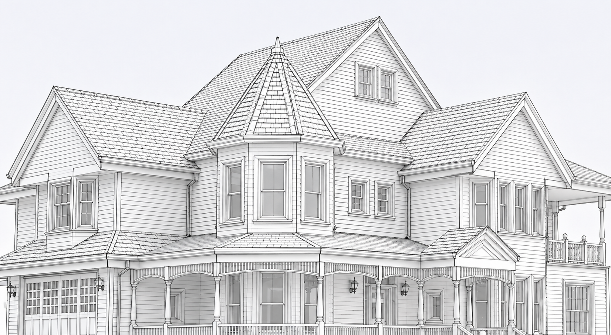
Malla de alambre RasterEn ambos modos se puede activar el backface culling (método considerarCara), que descarta las caras cuya normal apunta en sentido contrario a la cámara, acelerando el proceso de pintado.
No leas PanelVisor de principio a fin. Busca directamente los métodos considerarCara, pintarMallaAlambre y pintarRaster, y localiza después dónde se llama a renderer.Shader en el recorrido ráster. Identifica qué partes del algoritmo descrito en este guion implementa cada método. Compara los dos modos de visualización.
3.5 Iluminación de Phong
En el modo ráster, el color de cada píxel se calcula con el modelo de iluminación de Phong, una aproximación clásica y muy rápida.
Puedes leerlo de forma intuitiva como la suma de tres ideas:
- una luz base que evita que todo quede completamente negro;
- una componente difusa, que depende de cómo orientada esté la superficie hacia la luz;
- una componente especular, que produce los brillos.
La iluminación de Phong se suele expresar de la siguiente manera:
\[ C_p = k_a\, C_a \;+\; k_d\, C_l\,(n_p \cdot d_l) \;+\; k_s\, C_l\,(r_p \cdot v)^{e} \]
No hace falta memorizar todos los símbolos. En la práctica basta con relacionarlos con los controles del visualizador: ka añade luz base, kd controla la respuesta mate o difusa, ks refuerza el brillo y e hace ese brillo más abierto o más concentrado. Por otro lado, los términos Ca y Cl modelan la luz, y no el material del objeto.
La siguiente visualización 3D te permite modificar esos parámetros y ver su efecto en tiempo real, igual que harías al ajustar un material y una luz en un software 3D. Arrastra para orbitar y usa la rueda para hacer zoom.
Las siguientes imágenes no son capturas literales del visualizador, sino simplemente imágenes de apoyo para comprender mejor qué aporta cada término de la iluminación de Phong. Quédate sobre todo con estas dos ideas:
- Si quitas
ks, desaparecen los brillos especulares. - Si quitas
ka, las zonas en sombra se oscurecen mucho más.
Arrastra cada divisor y fíjate sobre todo en esas dos diferencias:
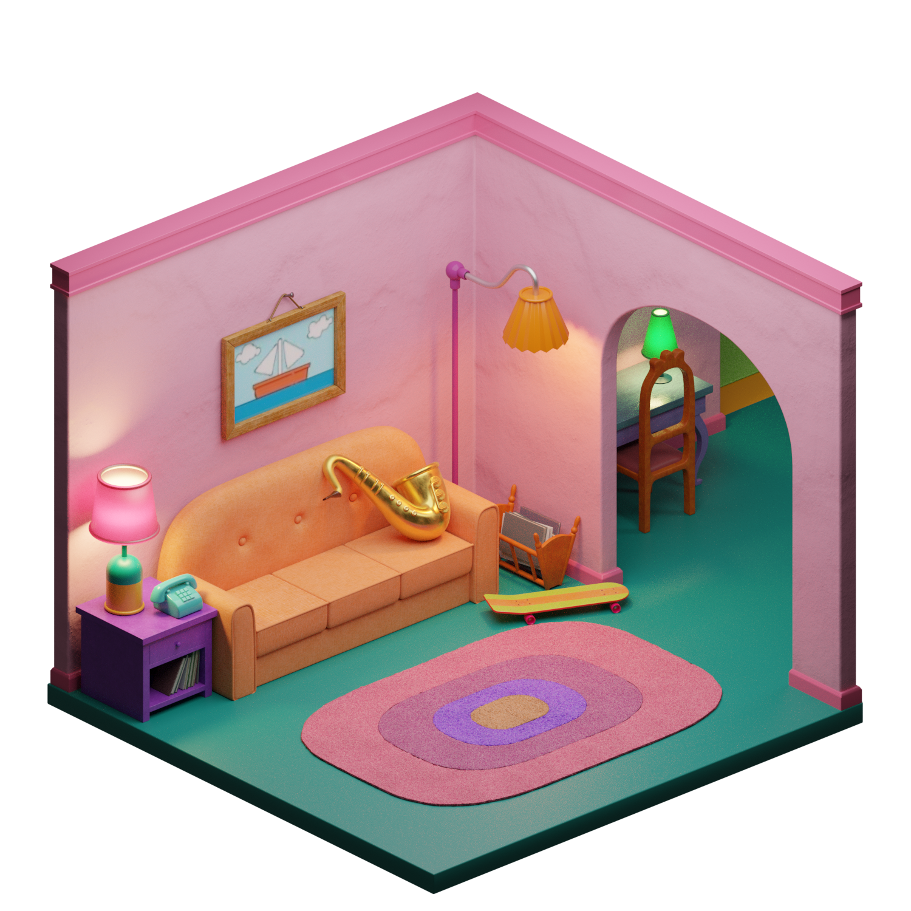
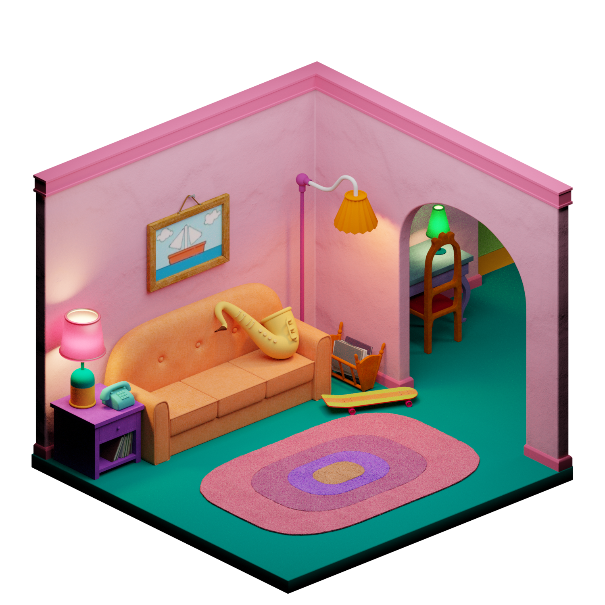
ka + kd + ks ka + kdCompleto ↔︎ sin componente especular. Por ejemplo, fíjate en el brillo del saxofón.
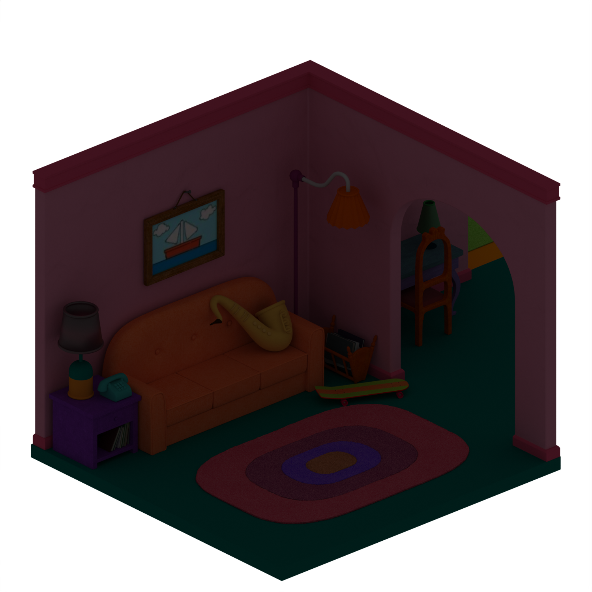
ka + kd kdAmbiente + difusa ↔︎ solo difusa.
Comparación de términos ka, kd y ks sobre una escena de BlenderKit, autor: Russo 3D.
Pon en el visualizador una luz completamente roja (canales verde y azul a 0) y el material completamente verde (canales rojo y azul a 0). ¿De qué color queda el objeto? ¿Por qué?
Prueba con otras combinaciones de colores de luz y material.
La siguiente visualización sirve justo como guía para responder a ese ejercicio. No reproduce todo el modelo de Phong al detalle: se centra en la idea más importante aquí, que es cómo se combinan por canales el color de la luz y el del material en la parte ambiente/difusa. Si en el visualizador aparecen pequeños brillos, recuerda que proceden de la componente especular y tienden a seguir el color de la luz.
RGB(1.00, 0.25, 0.25)
RGB(0.20, 0.78, 0.42)
RGB(0.20, 0.20, 0.10)
1.00 x 0.20 = 0.20
0.25 x 0.78 = 0.20
0.25 x 0.42 = 0.10
Vamos a crear un modo nuevo de visualización, como si el modelo fuese un falso análisis de ondas de color.
Primero, abre renderer.RenderMode y añade un valor nuevo al enum:
NORMALS("Normales"),
ONDAS("Ondas"),
DEPTH("Profundidad");Después, abre renderer.Shader. Justo después del bloque de RenderMode.NORMALS, añade este caso:
if (mode == RenderMode.ONDAS)
{
return shadeOndas(
pointX, pointY, pointZ,
nx, ny, nz
);
}Por último, añade este método cerca de shadeNormals. Esta versión ya funciona y suele dar un resultado vistoso:
private int shadeOndas(
double x, double y, double z,
double nx, double ny, double nz)
{
double escala = 0.18;
double onda1 = Math.sin((x + y) * escala);
double onda2 = Math.cos((y - z) * escala * 1.7);
double onda3 = Math.sin(Math.sqrt(x * x + y * y + z * z) * escala * 2.4);
double r = 0.5 + 0.5 * Math.sin(...);
double g = 0.5 + 0.5 * Math.cos(...);
double b = 0.5 + 0.5 * Math.sin(...);
return pack(r, g, b);
}Dentro de las funciones seno y coseno, puedes combinar las tres ondas de la forma que quieras. Prueba a sumarlas, multiplicarlas o a usarlas por separado, o súmale algún término como nx, ny o nz para que la orientación de la superficie también influya en el resultado. Un posible resultado es este:
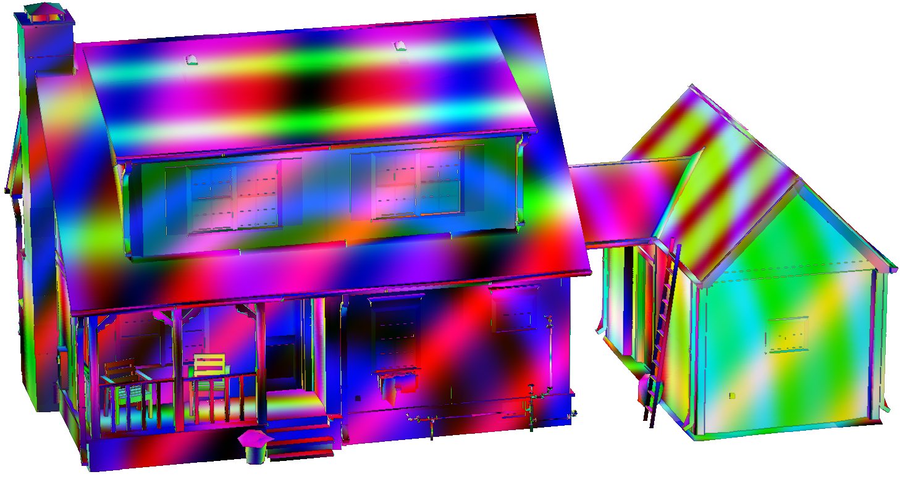
4 Más allá de Phong
El visualizador de esta práctica no implementa renderizado basado en físicas, y tampoco es el objetivo que lo haga. Aun así, conviene saber que en herramientas profesionales como Blender el resultado final suele apoyarse en modelos de iluminación más completos que Phong.
En lugar de decidir el color de un punto solo con la luz directa y un brillo aproximado, estos motores intentan estimar cómo viaja la luz por toda la escena: qué parte llega directamente, qué parte rebota en paredes, suelos, techos o vidrios, y cómo responden los materiales. En arquitectura esto importa mucho, porque la percepción de un espacio depende en gran medida de esos rebotes de luz.
No necesitas aprender ni programar path tracing en esta práctica. Esta sección solo sirve para que, cuando en Blender veas palabras como samples, bounces, noise o Cycles, sepas a qué se refieren.
Si quieres ver la formulación clásica, la idea se resume en la ecuación de renderizado de Kajiya (1986):
\[ L_o(\mathbf{p},\,\omega_o) = L_e(\mathbf{p},\,\omega_o) + \int_{\Omega} f_r(\mathbf{p},\,\omega_o,\,\omega_i)\; L_i(\mathbf{p},\,\omega_i)\; |\cos\theta_i|\; d\omega_i \]
Sin entrar en todos los símbolos, viene a decir que el color que vemos en un punto depende de la luz que emite ese punto y de toda la luz que le llega después de interactuar con la escena.
El siguiente esquema no pretende que aprendas path tracing ni que lo programes: solo visualiza la idea de los rebotes. Desde una pequeña abertura de la cámara se lanzan varios rayos y, cada vez que uno choca con una superficie, nace un nuevo rayo desde ese último punto. Los caminos que terminan encontrando la fuente emisiva aparecen en color; los que no lo consiguen quedan en gris.
4.1 Muestras, ruido y convergencia
La idea práctica es aproximar esos rebotes con muchas muestras. Si has visto que en Blender aparecen parámetros como samples o spp (samples per pixel), vienen de aquí: el motor lanza muchas trayectorias posibles de la luz y promedia su resultado.
No hace falta que estudies el método en detalle para esta práctica. Quédate con dos consecuencias muy útiles: con pocas muestras aparece ruido; con muchas, la imagen se estabiliza, pero el tiempo de cálculo aumenta.
La intuición estadística puede verse con un ejemplo muy sencillo: estimar el área de un círculo de radio 1 (que sabemos que es \(\pi\)) sin usar una fórmula cerrada, sino generando puntos aleatorios.
Idea: lanzamos puntos en el cuadrado [−1, 1]² (área = 4). La fracción que cae dentro del círculo de radio 1 (área = π) es π/4.
π ≈ 4 × puntos dentro / total
El gráfico inferior muestra la convergencia (eje x en escala logarítmica).
En el renderizado ocurre lo mismo: desde cada píxel se lanzan rayos aleatorios que rebotan entre superficies. Con pocas muestras por píxel (spp) el resultado es muy ruidoso; con muchas muestras la imagen se va estabilizando. Los dos renders de Blender siguientes ilustran este efecto (arrastra el divisor para comparar):
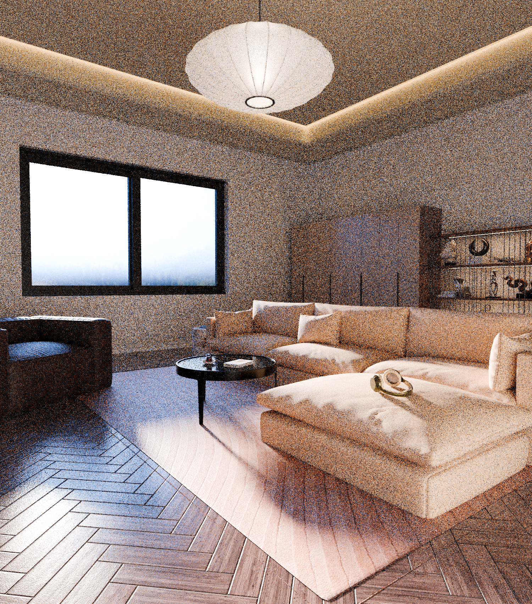
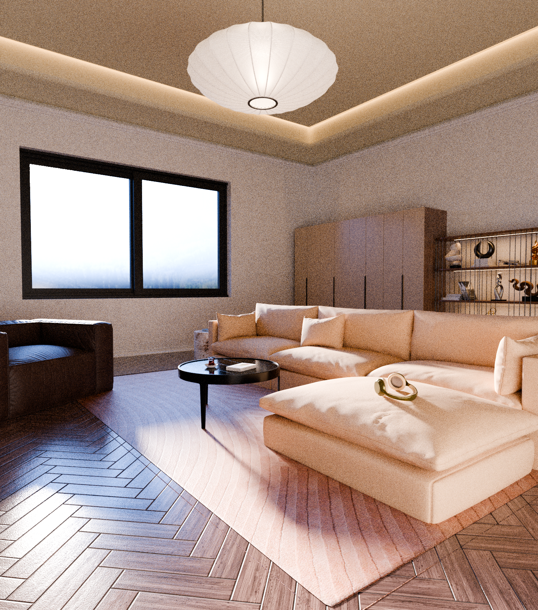
Pocas muestras ~3 min Muchas muestras ~8 minEscena del comparador spp procedente de BlenderKit, autor: Ibrohim Toxirov.
Esto es lo que ocurre en Blender Cycles y en otros motores con visualización realista: con pocas muestras aparece ruido, mientras que con más muestras el resultado se limpia, aunque el tiempo de cálculo también aumenta. En visualización de edificios se puede utilizar para reproducir mucho mejor la iluminación global de interiores y exteriores.
Para esta práctica, sin embargo, lo importante es que nuestro visualizador no busca ese nivel de realismo, sino una respuesta rápida e interactiva. Por eso usamos Phong.